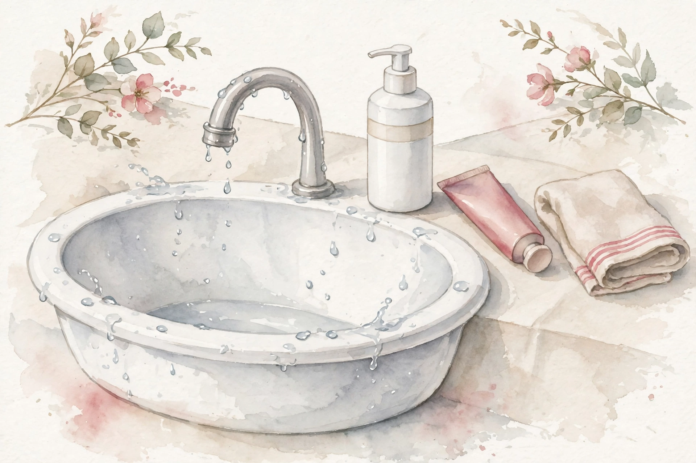

トップ ＞ ボディケア ＞ 手洗いが多い日のハンドケアの回数と量
手洗いが多い日のハンドケアの回数と量

仕事や家事で手洗いの回数が多い日は、そのたびに手の油分も一緒に流れていきます。施術者である私自身、一日に何度も手を洗う仕事なので、この悩みは身近です。この記事では、手洗いの多い日に絞った、ハンドケアの回数と量の決め方を整理します。
塗るタイミングは「手洗いの後」に固定する
回数を数えて塗るより、手洗いの後に塗る、と決める方が続きます。手洗いの回数が多い日は、自然とケアの回数も増える設計です。洗面所とキッチン、職場のデスクなど、手を洗う場所の近くにハンドクリームを置いておくと、この流れが作れます。
置き場所が遠いと、「後で塗ろう」が積み重なって、そのまま忘れます。動線の上に置くことは、他のカテゴリでも共通する、続けるための基本です。
1回量は、支障の出ない量で決める
日中の1回量は、塗った後にすぐ物に触れることを前提に、少なめが基本です。手の甲を中心に薄く伸ばし、指先など気になる部分だけ重ねます。量が多いと、書類やスマートフォンがべたつき、仕事の邪魔になります。
チューブの場合は出す長さ、ポンプの場合は押す回数を、自分の単位として決めておくと、毎回同じ量で進められます。
夜は、まとめてケアする時間に
日中は「洗うたびに薄く」、夜は「一日の終わりにしっかり」と、役割を分けます。夜は、量を日中より多めにし、手全体と指先まで丁寧に伸ばします。就寝前であれば、べたつきを気にせず進められます。
回数の多い日ほど、日中と夜の役割分担が効いてきます。無理に回数を増やすのではなく、タイミングと量の設計で回すのが、この部位のケアの考え方です。
塗り残しやすい場所にも触れておきます。指の間、爪のまわり、指輪の下は、手洗いの水も残りやすく、ケアの手も届きにくい場所です。夜のまとまった時間に、このあたりを意識して伸ばすと、手順の漏れが減ります。水仕事の多い日は、手袋を使って手を守る場面と、素手で洗う場面を使い分ける方もいます。手袋の中が蒸れる場合は、長時間の連続使用を避けるのが一般的な配慮です。職場と自宅で、同じ単位（チューブなら出す長さ）を使っておくと、場所が変わっても量の感覚がぶれません。手は一日中使う部位だからこそ、単位と置き場所の設計が、そのまま続けやすさになります。家族とハンドクリームを共有する場合は、ポンプ式を洗面所に置くと、誰もが同じ単位で使えます。自分の分と家族の分で役割を分けると、減り方の管理もしやすくなります。手洗いの多い日こそ、仕組みで回す発想が役に立ちます。
セラフィナ「塗るのは手洗いの後に固定。日中は薄く、夜はしっかり、の役割分担だね」

セラフィナ｜美容の道具箱の案内役
「量と表示が分かれば、美容は失敗しない。」——セラフィナと白猫のモコが、買う前のチェックポイントを案内します。綺麗になりたい気持ちに正直に、でも表示は冷静に読むのが、このサイトの約束です。